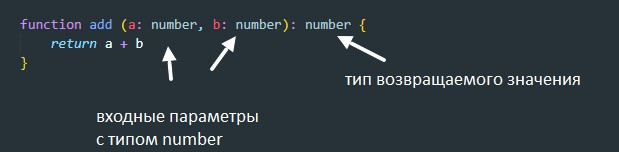
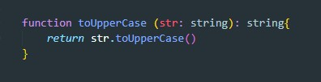
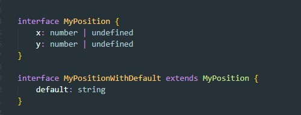
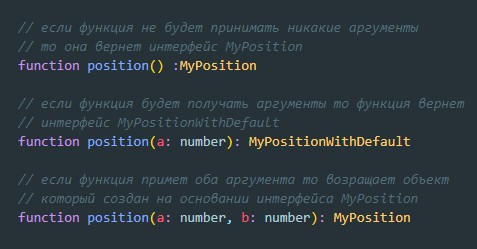
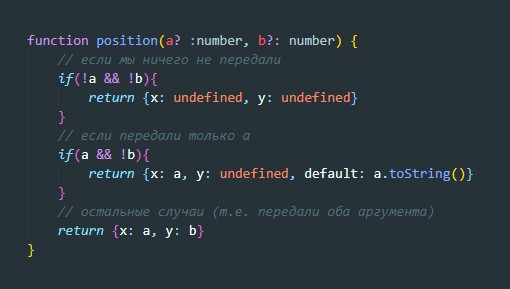
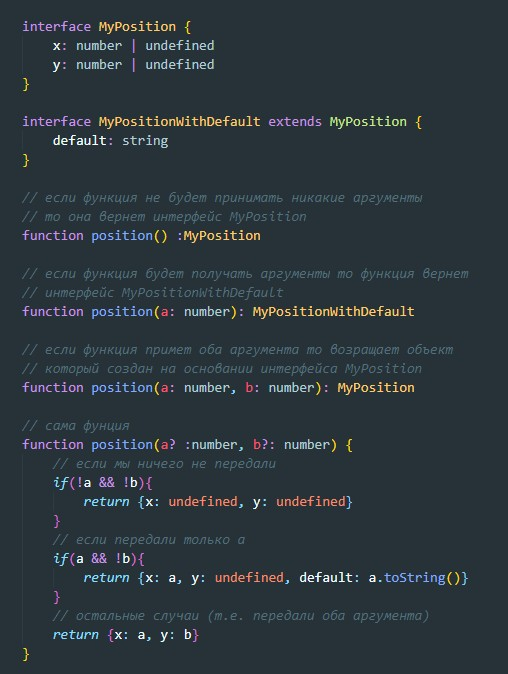

Пример написание функции на TypeScript
Второй пример
Мы можем перегружать определенные параметры и перегружать функцию, т.е. вызывать функцию с разными параметрами и получать разные значения
Для начала создадим два интерфейса которые будут нам диктовать как должен выглядеть объект который будет возвращать наша функция. Т.е. функция которую мы будем перегружать должна нам вернуть определенный объект. Вот типизацию этого объекта мы будем диктовать с помощью интерфейса:
Что значит перегрузка функции? По факту мы указываем перед декларированием функции разные варианты этой функции (что эта функция может принимать и что она будет в этом случае возвращать)
После этого мы уже дикларируем саму функцию, внутри котрой мы должны прописать логику разных вариантов входных параметров:
вот как в целом выглядит весь код:
